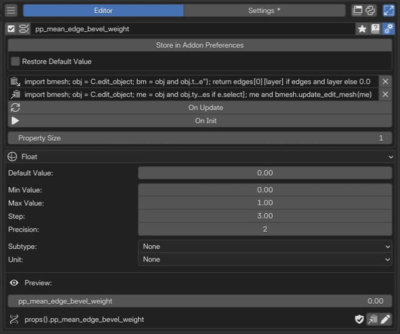
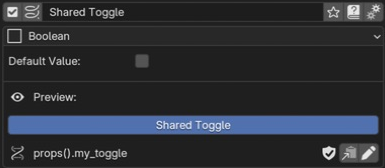

Property Editor¶
Property Editor は、自分で用意した値をチェックボックス、数値欄、文字列欄、選択肢として使うためのエディターです。作成した設定を PME Property と呼びます。メニューの状態を共有したり、既存の値を計算して表示したりできます。
一つの Property メニューで、一つのプロパティを定義します。 複数の値を用意する場合は、Property メニューをそれぞれ作成します。Enum の項目や Getter / Setter の入力欄は、同じプロパティの設定です。
実現したいこと |
選ぶ機能 |
|---|---|
自分で Boolean / 数値 / 文字列 / 選択肢を定義する |
このページの Property Editor |
Blender にすでにある設定をメニューに表示する |
|
複数の設定や条件を一つのオン・オフにまとめる |
|
モードなどの条件に応じて、表示・実行する内容を切り替える |
このページは PME 2.1 の仕様を扱います。2.0 以前の設定を使っている場合は、Property ID と移行も確認してください。
構成ガイド — 値とウィジェットを定義する（AI 向け）
呼び名：Property / PME Property／種別 ID：PROPERTY。 一つのメニューで一つのプロパティを定義します。Boolean / Int / Float / String / Enum を選びます。
保存する値：型と Default Value、必要に応じて範囲・表示方法・保存先を指定。単なる値の保存には Getter / Setter を追加する必要はありません。
既存データへの窓口：Getter / Setter で既存値を読み書きする構成も可能です。型・戻り値・対象がない場合の扱いを揃えます。
配置：別メニューの Menu タブから PME Property を参照するか、Preview でコピーしたパスを Property スロットやスクリプトで使います。表示名からパスを推測しません。
使い分け：既存 RNA パスのウィジェット配置だけなら Property スロット。複数条件の判定と一括切り替えなら Property Stack。
制約：独立した Hotkey はありません。Default Value と現在の値、表示名と Property ID を区別します。既存スクリプトの参照を維持する場合は ID を Lock します。
型は プロパティの型、参照は Property ID、コードは Getter / Setterへ。
画面と編集の流れ¶

1名前と基本操作編集対象の有効状態と名前を確認し、詳細設定を開きます。 2Advanced settings保存先、Getter / Setter などのコード、Property Size を設定します。 3型と値の設定型、初期値、範囲、表示方法を指定します。この例は Float です。 4Preview / Property ID現在の値を確認し、スクリプトで使う参照パスをコピーします。型と初期値を選び、必要な場合に保存先や Getter / Setter を設定します。最後に Preview で実際の値と参照パスを確認します。
名前と基本操作¶
有効状態、選択メニュー、名前、タグ、詳細設定などを操作します。共通の 選択メニューの設定を参照してください。表示名と Property ID は別です。
作成して使うまで¶
PME のメニュー一覧の ＋ から Property を追加します。
表示名と型を選び、Default Value を設定します。単純に値を保存するだけなら、Getter / Setter は不要です。
Preview で現在の値を操作します。Default Value は初期値、Preview は実際に読み書きする値です。
Preview のコピーボタンで参照パスをコピーします。スクリプトなどから使う前に Property ID を Lock すると、後で表示名を変えても同じ ID を維持できます。
コピーしたパスを、別のメニューの Property スロットなどに設定します。
例えば、表示名 My Toggle の Boolean を既定の保存先で作成すると、参照パスは props().my_toggle になります。実際の ID は重複などにより変わる場合があるため、表示名から推測せず Preview のパスを使ってください。
Advanced settings¶
保存先、Restore Default Value、Getter / Setter / On Update / On Init、Property Size などを設定します。型によって表示される設定が異なります。保存と実行の仕様は、このページの各詳細を参照してください。
プロパティの型¶
型 |
値の例 |
主な設定 |
|---|---|---|
Boolean |
|
Default Value |
Int |
|
Default Value、Min Value、Max Value、Step、Subtype |
Float |
|
Int と共通の設定に加え、Precision、Unit |
String |
|
Default Value、Subtype |
Enum |
定義した項目の識別子 |
Items、Default Value、Multi-Select、Expand、Horizontal Layout |
数値とベクトル¶
Boolean / Int / Float は、詳細設定の Property Size を 1～32 に設定できます。1 は単一の値、2 以上はその個数の成分を持つベクトルです。例えば Float の Size を 3 にすると、3 成分の値を扱います。String / Enum にはこの設定はありません。
Min Value / Max Value は値の下限・上限です。
Step は数値欄の操作に関する設定です。特に Float では、表示する小数点以下の桁数を指定する値ではありません。
Precision は Float の表示桁数で、0～6 です。
Subtype / Unit は、値の意味に合わせて表示や単位を選ぶ設定です。選択できる項目は型によって変わります。
色や方向を表す場合は、Float の成分数と Subtype を組み合わせます。成分数だけを増やしても、値の意味が自動で決まるわけではありません。型や Property Size を変更したら、Default Value と、それを使うスクリプトの値の形も確認してください。
Enum の識別子と表示ラベル¶
Items の Add Slot で選択肢を追加します。項目名は 識別子|表示ラベル の形にできます。
項目名の入力 |
スクリプトで使う値 |
表示 |
|---|---|---|
|
|
LOW |
|
|
High Quality |
| がない場合は、同じ文字列を識別子と表示に使います。識別子に空白は使わず、LOW / HIGH のような簡潔で重複しない値にすると参照しやすくなります。表示ラベルを、スクリプトで代入する値として使わないでください。
Multi-Select がオフなら一つの識別子、オンなら識別子の集合を扱います。例えば、上の二項目を両方選ぶ値は {"LOW", "HIGH"} です。Expand は選択肢を展開する設定、Horizontal Layout は展開した項目の配置を変える設定です。
Property ID と移行¶
表示名はユーザーに見せる名前、Property ID は Python から参照するための名前です。PME 2.1 では、PME Property と Property Stack にこの区別があります。
使用できる ID¶
制約 |
内容 |
|---|---|
長さ |
1～63 文字。使用できる文字は ASCII のため、この範囲では文字数とバイト数が一致します |
先頭 |
半角英字 |
2 文字目以降 |
半角英字、数字、アンダースコア |
使用できない名前 |
|
使用できない例 |
|
使用できる例 |
|
これは Property ID の制限です。メニューの表示名や String 型の値の制限とは別です。表示名には日本語や空白を使えます。その名前から ID を自動生成できても、ローマ字への翻訳結果になるとは限りません。
Preview で編集・Lock する¶
Preview の鉛筆ボタンから Edit Property ID を開き、ID と Lock の状態を編集します。通常は表示名の変更に ID も追従します。スクリプトやコピー済みのパスで使う ID は、Lock してから参照すると、後の表示名変更による修正を避けられます。
{kind=link}

Blender 5.1.0 / PME 2.1.0-beta.6。My Toggle の ID を Lock してから表示名を Shared Toggle に変更しても、参照パスは props().my_toggle のままです。Preview はオン、Default Value はオフを示しています。¶
Lock は ID の自動変更を止める設定です。プロパティの値や表示名を編集できなくする設定ではありません。ID 自体を編集した場合は、以前コピーしたパスやスクリプトを確認してください。PME が任意の Python コード中の文字列を書き換えるわけではありません。
2.0 以前の設定を使う場合¶
移行時に従来の名前を ID として使える場合は、参照を維持するため自動で Lock されます。名前に空白などがあり ID が変わった場合は、Preview に表示される現在のパスへスクリプトを更新します。
古い例にある props("表示名") は、条件によって読み取り互換として動くことがありますが、表示名への書き込みには使えません。新しく書くコードでは、読み取り・書き込みともに 現在の Property ID を使ってください。
値の保存先¶
詳細設定の Store in Addon Preferences をクリックすると、保存先の型を選べます。
保存先 |
値が属する対象 |
使い分け |
|---|---|---|
Store in Addon Preferences |
PME 共通の保存領域 |
複数のメニューで同じ設定を使う |
Store in Scene Instances |
各 Scene |
Scene ごとに異なる値を持つ |
Store in Object Instances |
各 Object |
Object ごとに異なる値を持つ |
その他の型 |
選択した型の各データ |
Material、Mesh など、目的に合う所有者を使う |
Addon Preferences の値は Blender の Preferences、Scene / Object などのデータに属する値はそのデータを含む .blend の保存を確認してください。メニュー定義の JSON エクスポートを、すべての Scene / Object の現在値のバックアップとして扱わないでください。
Object などを選んだとき、Preview のパスは特定のデータを指す場合があります。そのまま使うと、そのデータを操作します。「アクティブな Object を操作したい」場合は、対象が存在する条件を確かめ、対象の選び方も合わせて設計します。保存先を変えただけで既存の値が別の所有者へ移るとは考えず、変更後の値を確認してください。
Restore Default Value¶
Addon Preferences を選んだときだけ表示されます。有効にすると、PME の初期化時に保存済みの値を破棄し、Default Value から始めます。無効にすると保存値を使用します。Preview を押すたびに初期値へ戻す設定ではありません。
Preview に値が表示されない場合¶
表示 |
確認すること |
|---|---|
|
メニュー一覧で Property を有効にする |
|
ID の制約・重複、型や関数の設定を確認する |
|
選択した保存先のデータが存在するか確認する。登録済みでも Preview 用の対象を選べない場合がある |
|
有効状態と、Property ID が登録できているか確認する |
この状態の ID 表示を、実行できる参照パスと取り違えないでください。
メニューやスクリプトから使う¶
以下は、保存先が Addon Preferences、Property ID が my_toggle の Boolean を作成済みの場合の例です。
Property スロットの参照パス:
props().my_toggle
Command スロットで値をオンにする:
props().my_toggle = True
Custom スロットにチェックボックスを表示する:
L.prop(props(), "my_toggle", text="Shared Toggle")
props() は PME のスクリプト環境で使えるヘルパーです。Blender の Python Console などにそのまま貼り付けても、同じ名前が用意されているとは限りません。
書き方 |
意味 |
|---|---|
|
Addon Preferences の値の保存領域を取得 |
|
ID |
|
ID |
|
ID を文字列で指定して読む。見つからなければ |
|
ID を文字列で指定して書く。書き込みを受け付けると |
props() は Object / Scene 側の値を自動で探す機能ではありません。また、未作成の ID を渡して新しいプロパティを定義する機能でもありません。
第 2 引数の value が None の場合は、書き込みではなく読み取りになります。
型が合わない値の代入などでは例外になる場合もあります。
書き込みの戻り値 True だけでは、独自 Setter が意図した値を保存した証明にはなりません。
変更後の値を実際の保存先で確認してください。
Getter / Setter / On Update / On Init¶
値の読み書きに独自処理が必要な場合だけ、詳細設定から関数を追加します。関数の有無で、値を保存する方法も変わります。
構成 |
用途 |
|---|---|
Getter / Setter なし |
PME が通常の値を保存する。単純な自作設定はこれで始める |
Getter のみ |
他のデータから計算して読む。読み取り専用のプロパティになる |
Getter と Setter |
読み取り先と書き込み先を自分で定義する |
Setter のみ |
作成できない。先に Getter を追加する |
Setter がある間は Getter を削除できません。標準の保存動作へ戻す場合は Setter を先に削除します。
呼び出しと変数¶
関数 |
呼び出される場面 |
固有の変数・戻り値 |
|---|---|---|
Getter |
値の読み取り。UI の再描画などでも呼ばれる |
|
Setter |
値の書き込み |
|
On Update |
値の更新に伴う追加処理 |
|
On Init |
Property の初期化時 |
|
これらの関数では、menu は Property ID、pm_name は 現在の表示名です。menu を表示名と考えてコードを組み立てないでください。
Boolean の保存を自分で行う例¶
次は、保存先を変えず、同じ所有者のデータを使って Boolean を読み書きする最小例です。単に Boolean を保存したいだけなら、関数を追加しない構成のほうが簡単です。
Getter:
return self.get(menu, False)
Setter:
self[menu] = value
self は Addon Preferences を選んだ場合は PME の保存領域、Object を選んだ場合はその Object です。上の組み合わせは、同じ所有者・同じキーから読み、同じ場所へ書きます。
保存先が Addon Preferences の場合、Getter 内で自身の ID を props(menu) で読み直したり、Setter 内で props(menu, value) を呼んだりすると、自分自身の読み書きを再び呼び出します。自身のプロパティ経由で再帰させず、保存データや別の明確な対象を操作してください。 Object / Scene を保存先にしている場合も、props() ではその所有者の値を読み書きできません。
戻り値と実行条件¶
Getter は、設定した型と成分数に合う値を返します。
型 |
Getter が返す値 |
|---|---|
Boolean / Int / Float / String |
|
ベクトル |
Property Size と同じ長さで、各成分が型に合う配列 |
Enum |
定義済みの識別子、または対応する整数値 |
Multi-Select の Enum |
定義済みの識別子の集合、または対応するビット値 |
None や存在しない Enum の識別子は有効な値ではありません。Getter の例外、無効な戻り値、再帰的な読み取りなどが起きると、PME は初期値などの代替値を返すことがあります。値が表示されたことだけでは、Getter の処理が成功した証拠になりません。
Getter は再描画で繰り返し呼ばれるため、オブジェクト作成・モード変更・ファイル書き込みのような処理を入れず、値を読む処理にします。また、Object の選択や特定エディターの存在を前提にする場合は、対象外で返す値も定めます。On Init はメニュー操作中の処理ではないため、呼び出し元エリアがあることを前提にしないでください。
関数欄は 1 行の入力欄です。短い処理を記述し、長い分岐や大きなスクリプトを無理に一行へ詰め込まないでください。Getter に必要な return と、通常の Command に書くコードを区別することも重要です。
動作を確かめる¶
通常の保存：Preview を変更して、参照先メニューにも同じ値が表示されるか確認する。
ID の固定：Lock 後に表示名を変え、コピー済みのパスでも同じ値を読めるか確認する。
所有者ごとの値：Object / Scene を二つ用意し、片方を変えても他方に意図しない影響がないか確認する。
独自関数：通常時に加え、対象がない場合やモードが異なる場合も確認する。Setter の結果は保存先の値で確かめる。
保存と再起動：Preferences または
.blendを保存し、再起動後の値が Restore Default Value の設定と一致するか確認する。
AI に作成を相談するときも、「型」「保存先」「Property ID」「どの欄にコードを入れるか」「対象外でどうするか」を含めると、使えるコードを絞り込めます。
参考動画（原作者のチャンネル）¶
roaoao の動画一覧より。旧版の UI・手順を扱う参考動画です。